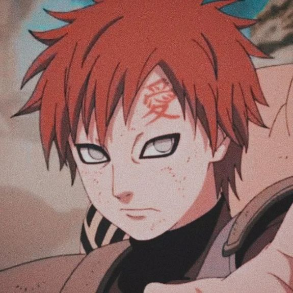
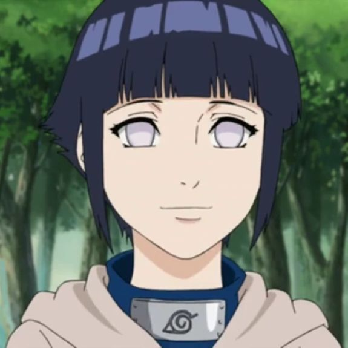
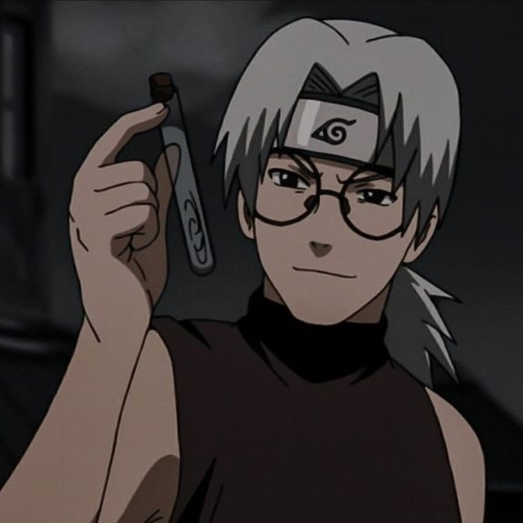
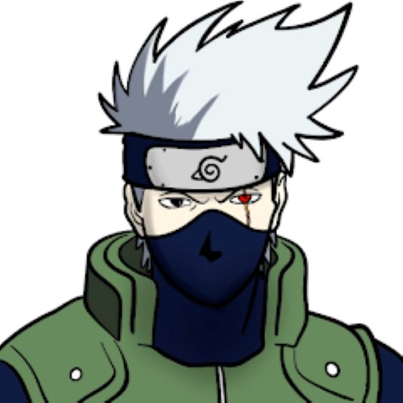
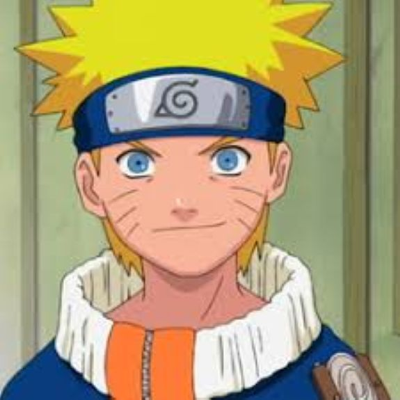
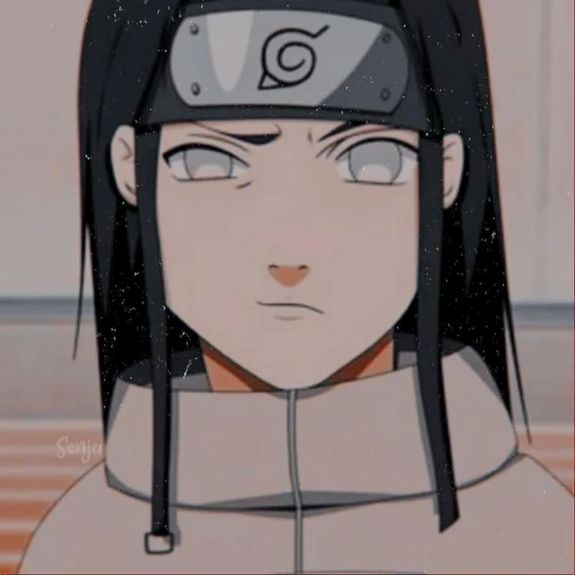
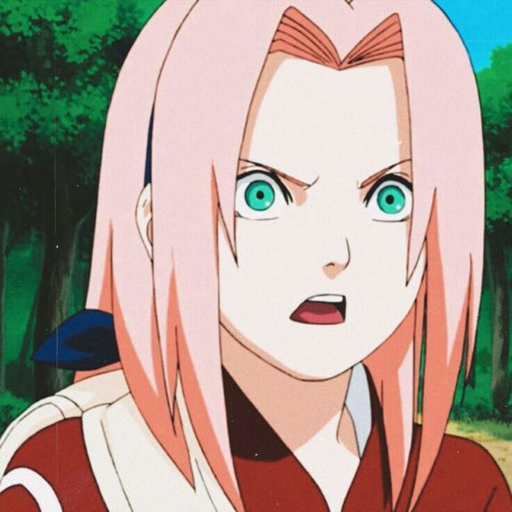

-
Gaara
Gaara (我爱罗, Gaara) é um shinobi de Sunagakure. O Shukaku foi selado em seu corpo no dia de seu nascimento, um procedimento que resultou na morte de sua mãe. Considerado como um monstro pela vila e sem ninguém para amá-lo, Gaara passou a desprezar o mundo e começou contando apenas com sua própria força, ganhando o título de Gaara do Deserto (砂瀑の我愛羅, Sabaku no Gaara). Este poder de auto-amor é mais tarde derrotado pela dedicação inabalável de Naruto Uzumaki por seus amigos.
ATK/ 2800 DEF/ 2500Hinata
Ela é um membro dos clãs Hyuuga e Uzumaki de Konohagakure. Tendo um temperamento humilde, a falta de auto-confiança de Hinata era refletida em suas habilidades — traços que fizeram seu pai considerar que ela não era adequada para a sua posição como herdeira do clã.
ATK/ 3200DEF/ 2000 Kabuto
Kabuto Yakushi (薬師カブト, Yakushi Kabuto) cresceu como uma criança órfã de guerra. Ele foi levado para Konohagakure, mas, em troca, ele foi pressionado para começar a espiar para a aldeia pela Raiz. As muitas identidades que ele teve que assumir o deixou inseguro de quem ele realmente era.
ATK/ 2600 DEF/ 2300Kakashi
Kakashi Hatake (はたけカカシ) Ele é um Jounin de Konoha e líder do Time Kakashi, além de ter sido um ANBU. Ele é o único filho de Sakumo Hatake. Kakashi foi estudante de Minato Namikaze, e se tornou um Jounin durante a Terceira Guerra Mundial Ninja.
ATK/ 3500 DEF/ 3000Naruto
Naruto é um órfão que, quando era um recém-nascido, teve um monstro conhecido como a Raposa de Nove Caudas selada dentro de seu corpo pelo seu pai, o Quarto Hokage, Minato Namikaze, o líder da força ninja do País do Fogo, ao custo de sua própria vida. Por causa dele ser o hospedeiro do Nove Caudas, Naruto foi isolado pela maioria dos moradores de sua vila durante sua infância por estar associado com ele e por isso foi considerado tabu.Desde então, Naruto tem cometido piadas e brincadeiras para atrair atenção. Desejando o que lhe faltava no início da vida, Naruto sonha em se tornar um Hokage com a esperança de ser reconhecido e respeitado pelos moradores da vila.
ATK/ 2400 DEF/ 2600Neji
Neji é um personagem calmo e sensato do clã Hyuga da Vila Oculta da Folha e ajudante de Naruto na busca por Sasuke. O universo PLAYMOBIL Anime continua a se expandir! Todos os fãs de anime podem esperar novos personagens do emocionante universo NARUTO.
ATK/ 3000 DEF/ 2800sakura
No anime e mangá, Sakura é uma kunoichi afiliada com a vila de Konoha, e parte da equipe 7, que consiste de si mesma, Naruto Uzumaki, Sasuke Uchiha e seu sensei, Kakashi Hatake. Sakura inicialmente tem uma paixão por Sasuke, elogiando-o em cada situação, e acumulando desprezo sobre o menos qualificado Naruto.
ATK/ 2900 DEF/ 2100